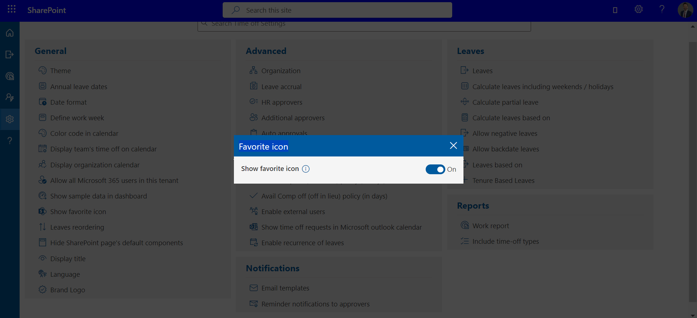
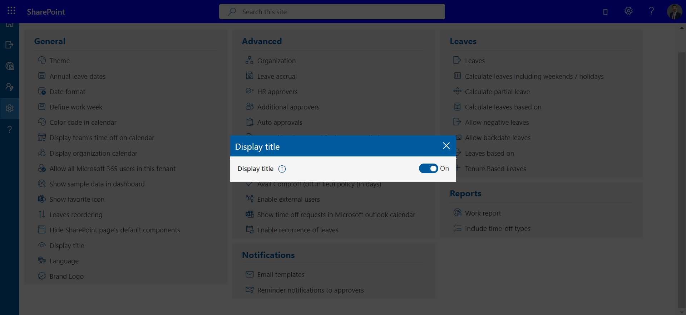
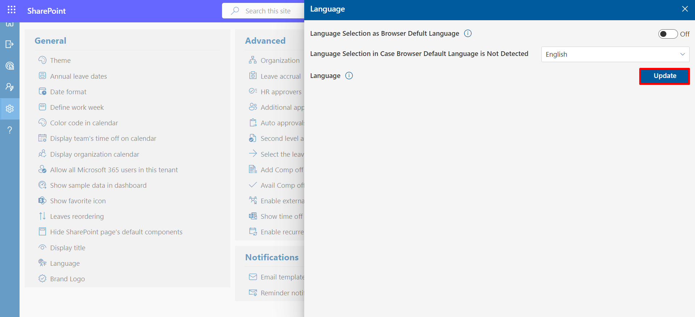

General Settings
Here, you can change theme, date format, color code, brand logo etc.
-
Theme
Here, you can change the theme color light, dark and site theme. -
Annual Leave Start Date and Annual Leave End Date
You can specify the annual leave start and end dates here, or alternatively, set them based on the joining date, depending on your requirements for leave calculation. If accrued leaves are enabled, leaves would be calculated and allocated to users based on these date and date of joining of the candidate.

Examplelet say
candidate joining date = 15 th March 2024.
Annual Start date= 1 st Jan 2024
Annual End Date = 31st Dec 2024.
Casual Leaves = 24.✔ If accrued is disabled, candidate allocated leave would be (24 leaves /12 month) * Remaining months i.e., 9 months = 18 Leaves allocates for a years
✔ If accrued is enabled and type is Monthly, for march month allocated leave will be 2 and it increase by 2 on every month.
✔ If accrued is enabled and type is quarterly
24 leaves/ 3 quarter for year = 8 leaves for each quarter
Now (1st quarter= 8 leaves) / 4 months = 2 leaves
∴ 2 leaves * 2 months (remaining months to complete one quarter) = 4 leaves allocates in first quarter and then 8 leaves would allocate for in each quarter automatically.
Date Format
If you change the date format, it will update in entire application.

Define Work Week
In this table add 0 in the cell for weekend. Leave calculation would be done based on working days.

Color code in calendar by
Here, you could define color in calendar bases on leave status and leave type. This could be enabled, by selecting the check box and click on save icon.

Display team's time off on calendar
You can, if enabled, view the calendar of leaves taken by Team members in the same department.

Display organization calendar
The organization calendar is visible only to specific roles that have been selected.

Allow all microsoft 365 users in this tenant
Microsoft 365 users would not get the access of application until users are added in users list of the application. If enabled, all the tenant users could use the application from the URL.

Show Sample data in Dashboard
To display sample data on the dashboard, simply activate the toggle button.
Show Favorite icon
Activate the toggle to display the favicon on the left side of the browser tab, facilitating easy identification of the website for users.

Leaves reordering
Here You Can reorder the Leaves.
Hide SharePoint page's default components.
Select Configure to Process Continue.

Remove custom webpart CSS :Enable this toggle will remove space outside of Webpart.
Hide webpart title in sharepoint page :Enable this toggle will remove the Webpart title.
Hide side navigation panel in sharepoint page : Enable this toggle will hide side navigation Panel.
Hide top command bar on sharepoint page :Enable this toggle will hide the command bar on sharepoint page.
Hide top site header :Enable this toggle will hide top site header where app is running.
Hide comments wrapper :Enable this toggle will hide comments wrapper in sharepoint page where app is running.
Hide Left Navigation Bar On Collapse For Teams :Enable this toggle will hide left navigation bar on collapse for teams where app is running.
- Display Title : You have the option to toggle the visibility of the title field when applying for leave.

Language selection as browser default language.
Select browser Default Language.

Language selection in case browser default language is not detected:
If the browser default language is not detected, you can manually choose your preferred language using the dropdown menu provided.
- Language: You can modify the language text here.

Log Settings
The user has the option to enable log collection. If you want to collect logs, please turn on the toggle. These logs are used for troubleshooting any issues occurring in your application.
Log Types
After enabling log collection, the user will see an option for 'Log Types' below."
- Debug Logs: Captures detailed system activity for in-depth troubleshooting. It generates extensive logs and requires significant storage space. Ideal for resolving specific issues.
- Information Logs:Records all application actions, providing a complete activity trail. Useful for analyzing suspected issues but consumes moderate storage.
- Warning Logs:Logs errors and potential risks that might not immediately disrupt functionality. Focused on early issue detection with minimal storage impact.
- Error Logs:Logs critical errors affecting application functionality. Provides essential details for immediate troubleshooting with minimal storage usage.
If the user selects 'Debug' from the log types and saves it.
Then, the user will see an option to 'Download Logs' after going to the help page.
In the field, the current user's name must be entered, and then by clicking on 'View,' the user can access and view the debug logs.
The user can click on the 'Share' icon to share the logs. Encrypted logs will be shared with Cubic for further troubleshooting and to provide a more efficient resolution.
For downloading, the user can click on the 'Download' option to retrieve the logs.
Make Notes Required
Turn on this setting to make the 'Notes to Approver' field mandatory when submitting a leave request. This ensures that employees provide context or details for their request, which helps approvers make informed decisions.
Click on the 'Make Notes Required' toggle switch to enable it. Once enabled, the leave request form will not allow submission unless the 'Notes to Approver' field is filled in.
Brand logo
Here you can add your company logo, which will be displayed at the top of the navigation bar. From here, the admin can add or update the company logo. The updated logo will appear at the top of the navigation bar. The recommended size for the logo is 150 X 60, with the same aspect ratio, and a transparent or white background is recommended for better visibility and user experience.
Click on the 'Upload Logo' button, then select the logo file. After selecting, the user will have the option to crop the logo, allowing them to adjust the image as needed.
After cropping, the user can click on the 'Save Logo' button. Once saved, the logo will be visible on the top bar.
If the user wants to remove the logo they added and upload a new one, they can click the 'Remove' button. A confirmation prompt will appear asking 'Yes' or 'No.' If the user selects 'Yes,' the logo will be removed.